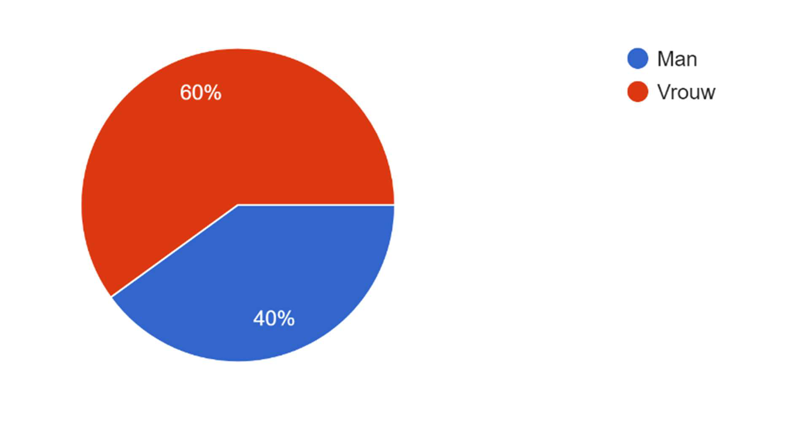

Human-Centered Design: Reducing Loneliness
A Human-Centered Design study within the Positive Psychology & Technology minor: desk research, a survey of 50 students, ten street interviews and an expert interview built into personas and a full requirements specification for a solution that reduces social and emotional loneliness in young adults.
Overview & Problem
This study was carried out for the Positive Psychology & Technology minor at Saxion with two teammates. We chose loneliness, a problem that became tangible for everyone during COVID-19. According to Statistics Netherlands (CBS), 1 in 10 people feel strongly lonely, and the trend is rising across every age group. We distinguished social loneliness (less contact than wanted) from emotional loneliness (missing a close, intimate bond), focused on the 15-25 age group, and framed the question: "What are the requirements for a solution that effectively reduces social and emotional loneliness in 15-25 year olds?"

Loneliness by age (CBS, 2023)

Survey demographics
Approach
We worked through four HCD phases: Exploration (desk research, the 6 W's, stakeholder analysis), Deepening (survey and interviews), Verification (expert interview, human-factors theory, stakeholder feedback), and a Requirements specification of functional, non-functional, ethical and boundary requirements.
Research
The survey was completed by 50 students (30 women, 20 men, 94% at HBO level), measuring social and emotional loneliness and psychological well-being (based on the Dutch Flourishing Scale). We also held ten in-depth street interviews in Deventer and at Saxion. A key insight: participants with emotional loneliness scored lower on well-being, and "building shared experiences" was seen as the best way to counter both types.
Personas
Based on the interviews we built personas to keep the target group central, for example:
- Maud - a student with plenty of superficial contacts but a lack of depth.
- Koen - moved cities during COVID, slid into isolation and destructive coping, now recovering.
- Simon - a young trans man who faces discrimination and wants to feel accepted and safe.
Each persona was paired with a scenario and user story that fed directly into the requirements.
Expert Verification
We interviewed a healthcare psychologist to verify our findings. Key takeaways: loneliness should be treated holistically (social and emotional loneliness are gradations of the same feeling); a group approach in a safe environment helps; conditions such as autism or PTSD increase the feeling of not belonging; and technology can both amplify loneliness and help people stay connected.
Requirements
The specification concluded the solution should help users deepen relationships and make social interaction more accessible, support acceptance, facilitate networks at work and school, give practical tools to take initiative and build shared experiences, offer clarity to users with limited social skills and memory support where needed, and connect people with peers. Non-functional requirements covered accessibility, multiple languages, a simple personalized interface, minimal screen time and low cost; ethical requirements covered autonomy, equal treatment and transparency; and boundary conditions required GDPR compliance and an honest disclaimer that the solution cannot guarantee improved well-being.
Reflection
This project was a change of pace from my usual mechatronics work: instead of forces and tolerances, it centred on people. It taught me how to run structured user research, turn messy qualitative input into personas and user stories, and translate human needs into concrete, verifiable requirements - a mindset I now carry back into my engineering projects.